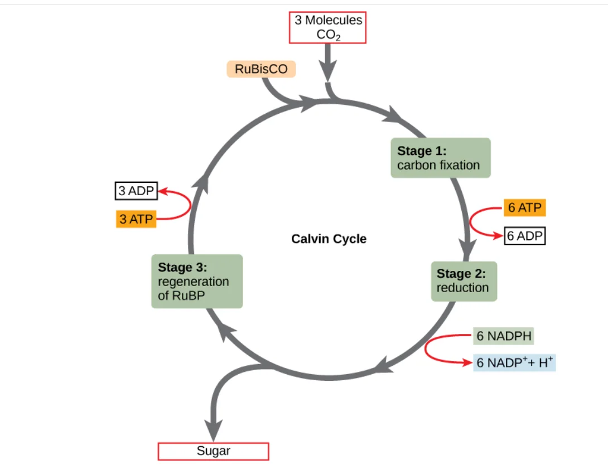
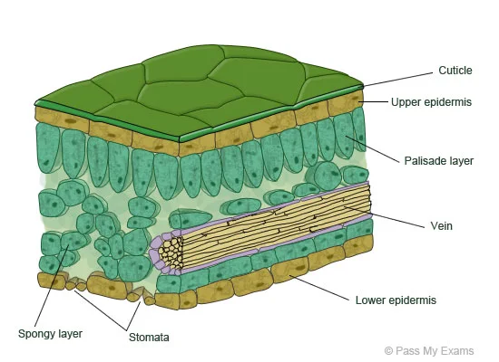
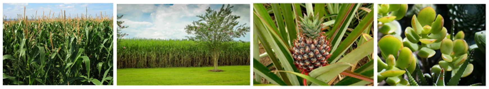
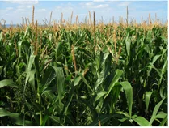
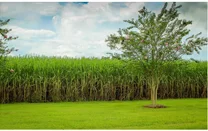
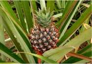
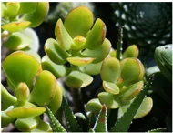

C4 and CAM Plants
Photosynthesis · alternative pathways in hot, dry climates
 UAE NATIONAL CHARTER · الميثاق الوطني
UAE NATIONAL CHARTER · الميثاق الوطنيMeet your UAE Values Team
Five friends will coach you through today's desert-plant mission. Tap a character to discover their job today!
Lesson map · 45 minutes · tap any activity
Objectives, success criteria & key words
Describe C4 and CAM plants (alternative ways of photosynthesis).
- Foundation: I can explain why stomata close in hot, dry conditions and name examples of C4 and CAM plants.
- Secure: I can describe how C4 plants separate the steps in space and CAM plants separate them in time.
- Advanced: I can explain photorespiration and evaluate which strategy suits the UAE best.
Starter + attendance on the LMS

- Mark your attendance on the LMS and settle in your seat.
- Recap the last lesson: name the three stages of the Calvin cycle and the enzyme that fixes CO₂.
- Try the interactive: photosynthesis interactive (Lesson 102: the light-independent reactions).
- Then answer the true/false questions on the next slide on your own.
Pre-assessment: what do you already know?

Hook: green at 45 °C

A UAE summer afternoon…
Maize and sugarcane grow fast in strong sunlight. A pineapple and a jade plant survive with very little water. All four still need CO₂ for the Calvin cycle.
Focus question: to get CO₂, a leaf must open its stomata, but then it loses water. How are C4 and CAM plants different from normal plants?
2. Could a plant take in CO₂ at a cooler time?
3. Could a plant do the steps in different cells?
Video: C4 and CAM plants (narrated, 2 min 22 s, subtitles)
Activity 1: C4 or CAM?
Does each feature describe a C4 plant or a CAM plant? Tap to choose, then check.
Activity 2: two kitchens, one cook (the unconventional version)
Rubisco is a cook who gets confused when the kitchen fills with smoke (O₂). A C4 plant is a restaurant with two kitchens: a helper in the front kitchen (mesophyll) packs CO₂ into boxes (4-C molecules) and sends them to the back kitchen (bundle sheath), so the cook always has plenty of CO₂. A CAM plant is a family that shops at night when it is cool, stores the food in the fridge (vacuole) and cooks during the day with the doors shut.
Plants in hot, dry climates have evolved alternative mechanisms of carbon fixation. The C4 pathway keeps photosynthesis going while reducing water loss, using a special arrangement of leaf cells. CAM plants collect CO₂ at night, store it in organic compounds, and release it in the day for the Calvin cycle.
Textbook: why do plants need another way?
Textbook: C4 plants · separation in space


The C4 pathway allows plants to maintain photosynthesis while reducing water loss. C4 plants have a significant structural modification in the arrangement of cells within the leaves.
Textbook: CAM plants · separation in time


Crassulacean acid metabolism (CAM) is found in desert plants. These plants collect CO₂ at night and store it in organic compounds. During the day, they release CO₂ from these compounds for photosynthesis.
Simulation: hot day leaf · close the stomata
Simulation: the C4 relay · mesophyll → bundle sheath
Press Next step to follow one CO₂ molecule through a C4 leaf, from the air to the Calvin cycle.
Simulation: the CAM clock · and which is better for the UAE?
Which plant strategy is better for the UAE: C4 or CAM?
Lab: stomata peel · open or closed?
- Paint a small patch of nail varnish on the underside of each leaf. Let it dry.
- Press clear tape on the patch, peel it off and stick it to a slide.
- Observe at 400×. Count the stomata in your field of view and note if they look open or closed.
- Compare the two leaves (sampled during the school day).
| Leaf | Stomata in view | Open or closed (daytime)? |
|---|---|---|
| Maize / grass (C4) | many, in rows | partly open |
| Jade (CAM) | fewer, scattered | mostly closed |
| Link | to save water | at night |
Formative check
Tap an answer. Wrong? Read the hint and try again!
Put the C4 pathway in order
Tap the steps from first to last. Tap a numbered one to undo.
C4 and CAM worksheet (1/2)
B. 4-C compound made in C4 plants
C. Cells where C4 plants run the Calvin cycle
D. Where CAM plants store organic acids
E. Pores that let CO₂ in and water out
C4 and CAM worksheet (2/2)
| Statement | Which plants? |
|---|---|
| reduce water loss in hot, dry climates | |
| stomata open only at night | |
| a special arrangement of leaf cells | |
| still use the Calvin cycle to make sugar | |
| maize and sugarcane | |
| pineapples and cacti |
Why are C4 and CAM plants better adapted to hot, dry environments than normal plants?
✓ In heat, normal plants close their stomata, CO₂ falls and rubisco wastes energy in photorespiration.
✓ C4 plants fix CO₂ in mesophyll cells and concentrate it in bundle sheath cells, so stomata can stay partly closed.
✓ CAM plants open stomata only at night and store CO₂ as acids, so they lose much less water in the hot day.
Main activity: visual questions · Green · Blue · Orange
Green · Mandatory ★
- Why do stomata close on hot days?
- Name two C4 and two CAM plants.
1. To conserve water.
2. C4: maize, sugarcane (grasses). CAM: pineapple, cacti (jade).
Blue · Less mandatory ★★
- Describe the C4 pathway in three steps.
- Describe what a CAM plant does at night and in the day.
1. Mesophyll fixes CO₂ into 4-C → moves to bundle sheath → CO₂ released into the Calvin cycle.
2. Night: stomata open, CO₂ stored as organic acids. Day: stomata closed, CO₂ released to the Calvin cycle.
Orange · Optional ★★★
- Explain how photorespiration wastes energy.
- Which strategy is better for the UAE? Justify your answer.
1. Rubisco fixes O₂ instead of CO₂, so no glucose is made but ATP and NADPH are used.
2. CAM saves the most water in the open desert; C4 grows faster for irrigated crops. Any justified answer.
Summative assessment: Desert Plant Master quiz
Plenary: how are C4 and CAM plants different?
Normal plants close their stomata in the heat, so rubisco wastes energy in photorespiration. C4 plants (maize, sugarcane) separate the steps in space: mesophyll cells fix CO₂ into a 4-C molecule and bundle sheath cells run the Calvin cycle. CAM plants (pineapple, cacti) separate the steps in time: stomata open at night and CO₂ is stored in vacuoles for the day. Both save water and keep photosynthesis going.
Foundation: I can explain why stomata close and name C4 and CAM plants.
Secure: I can describe separation in space (C4) and in time (CAM).
Advanced: I can explain photorespiration and evaluate the best strategy for the UAE.
I can link both pathways back to the Calvin cycle.
Which value did you show today?
Tap the character whose value you showed in this lesson. Then tell your partner one real example!
Thrive where others can't
Desert plants did not wait for easier weather. They found smarter ways to grow. When life gets hot and hard, adapt, be patient, and keep growing!